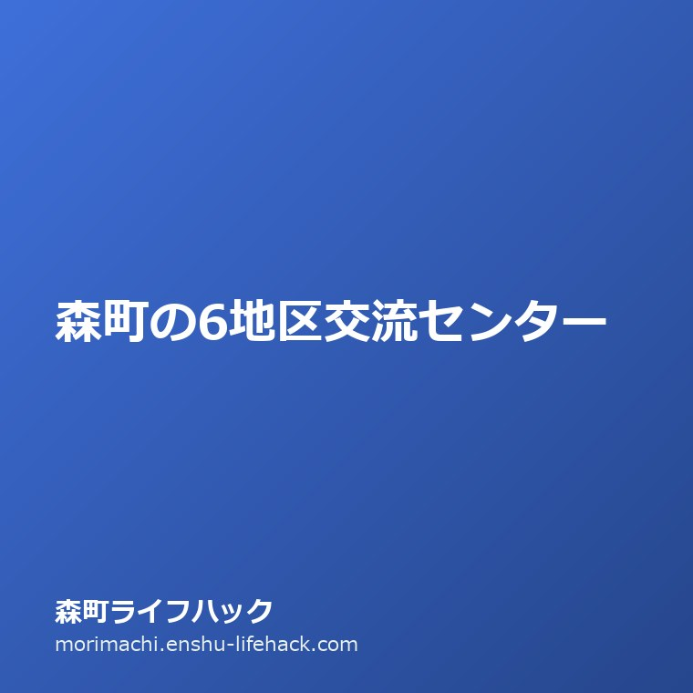

地区めぐり
森町の6地区交流センター｜公民館から引き継いだ地域拠点と利用手続き

この記事の要点
Q. 森町の地区交流センターは誰でも使える？実家の用事や地域相談での使い道は？
A. 森町の6地区交流センターは旧公民館を引き継いだ地域拠点で、社会教育や地域活動に低廉な費用で利用できます。実家の空き家管理や自治会との連絡窓口としても重要な役割を果たします。
導入——森町を歩くとき、地区ごとの拠点を知る意味
周智郡森町を訪れたり、離れて暮らす実家の用事で町内を移動したりするとき、各地区の幹線道路沿いに「地区交流センター」という看板を目にします。森町には森地区、飯田地区、園田地区、一宮地区、天方地区、三倉地区という伝統的な六つの地区があり、それぞれに地域住民が集まる拠点施設が置かれています。
この記事で整理したいのは、森町の中心部にある森町役場や森町文化会館（ミキホール）だけでなく、各地区の生活圏にある交流センターがどのような役割を持ち、町民や家族がどう利用できるかという実務の話です。
最初の問いは「森町の地区交流センターは、誰でも利用できる施設ですか。実家の手続きや地区の集まりで使うには何が必要ですか」です。結論を先に言えば、地区交流センターは旧公民館の機能を引き継いだ社会教育・地域コミュニティ施設であり、町民の学習・文化活動や地域の会合に幅広く開かれています。ただし、営利目的の利用制限や地区ごとの予約窓口、使用料の規定があり、事前に仕組みを理解しておく必要があります。
特に森町外に住みながら実家や空き家、農地を管理している家族にとって、地区交流センターはその土地の人間関係や暮らしの重心を知るための極めて重要な窓口です。「役場に行くほどではないが、地域の慣習や自治会の連絡先が知りたい」というとき、現場の頼りになる存在となります。
公式資料に書かれている設備や開館時間と、不動産実務の現場で感じる地区コミュニティの現実を重ね合わせながら、6地区の交流センターを順に読み解いていきます。

まず、公式資料から事実を整理する
森町が公表している主要施設一覧や社会教育・地域振興の資料によると、町内には森地区、飯田地区、園田地区、一宮地区、天方地区、三倉地区の各地区に交流センター（または地区公民館）が配置されています。
第一の森地区交流センターは町の中心部に位置し、森町文化会館や図書館、役場本庁舎に近い立地にあります。商店街や住宅地が集積する森地区において、自治会連合や文化団体の会合、各種サークル活動などに日常的に広く使われています。
第二の飯田地区交流センターは森町の東部、袋井市や磐田市との境界に近い平野部にあります。農業集落と新興住宅が混在する地域であり、子育て世代の集まりやシニアの健康教室、民生委員の連絡会などの活動拠点となっています。
第三の園田地区交流センターは太田川の中流域東岸に広がる園田地区の生活拠点です。天浜線の駅や主要県道へのアクセスを持ち、地区の防災訓練や消防団の詰め所、自治会行事の集合場所として機能しています。
第四の一宮地区交流センターは遠江国一宮・小國神社の門前町として栄えた歴史ある地区に位置します。一宮地区の伝統芸能や古代からの祭り、観光・文化の保存活動を支える地域の中核施設でもあります。
第五の天方地区交流センターは太田川上流の山あいに位置する天方地区にあります。集落が谷沿いに点在する中山間地域において、住民が一堂に会する貴重な屋内交流の場として長年にわたり維持されています。
第六の三倉地区交流センターは森町の最北部に位置し、旧三倉村の歴史を色濃く残す山間地域の中心拠点です。公共交通の便が限られる三倉において、地区の連絡調整や健康づくり、福祉の巡回窓口などの基盤となっています。
これらの施設は、森町社会教育課や各地区の地域振興組織、まちづくり協議会によって管理運営されています。開館時間はおおむね午前9時から午後9時または午後10時までとなっており、夜間の地域会合にも対応できる運用が取られています。休館日は年末年始（12月29日から1月3日）および月曜日など、施設ごとの利用規定に定められています。
施設内には、30人から50人規模の会合ができる集会室・会議室のほか、畳敷きの和室、調理実習ができる調理室などが備えられているのが標準的な構成です。ピアノやマイク設備、プロジェクターを備えている施設もあり、地域の多様なニーズに応えています。
森町での暮らしへの影響——地区差と移動の距離
公式資料の記載を、森町で暮らす家族の生活動線に引き直してみましょう。森町は面積133.91平方キロメートルあり、南部平野部から北部山間部まで地形と標高差が大きく異なります。
南部の森・飯田・園田地区では、車を使えば数分から10分以内で交流センターへアクセスできます。平坦な道が多いため、徒歩や自転車、シニアカーで通える高齢者も多く、日中のサロン活動や健康体操、趣味のサークル利用が活発に行われています。
これに対して、北部の天方地区や三倉地区では、集落ごとの標高差や谷筋の移動があり、交流センターまで車で15分から20分以上かかる世帯も珍しくありません。特に高齢で運転免許を自主返納した世帯にとっては、地区センターへ行くこと自体が家族の送迎や町営バスの運行時刻に左右される大きな移動となります。
また、実家じまいや空き家管理で町外から訪れる家族にとっても、地区交流センターの存在は軽視できません。実家の草刈りや樹木の越境、自治会費の集金、ゴミステーションの利用ルールなど、地域社会との調整が必要になった際、自治会長や地区役員の連絡窓口となるのが各地区の交流センターや公民館の運営組織だからです。
役場の本庁舎へ相談に行っても、「地域の慣行やゴミ置き場の位置については、地元自治会で話し合ってください」と言われる場面が多々あります。そうしたとき、現場の相談相手として最初に頼るべきは、最寄りの地区交流センターに関わる地元役員の方々です。
さらに、各交流センターには町立図書館の予約本を受け取ったり返却したりできる図書巡回サービスが導入されている地区もあります。わざわざ森地区の図書館まで出向かなくても、身近なセンターで読書を楽しめる仕組みは、中山間地域での生活の質を底上げする貴重な支えとなっています。

良い点：身近な地域ごとに公共の居場所が残されている
森町の地区交流センターの良い点は、人口規模が約1万7千人の町でありながら、合併前の旧町村単位や歴史的な地域区分ごとに、住民が集まれる公共の拠点がしっかりと維持されていることです。
全国の地方自治体では、公共施設の統廃合によって周辺地区の集会所や出張所が次々と廃止・売却される事例が相次いでいます。その中で森町が6地区それぞれの交流拠点を守り続けていることは、高齢者の孤立防止や地域自治の継続にとってかけがえのない強みです。
また、利用使用料が町民活動に対して極めて良心的に設定されており、会議室や和室、調理室などを低廉な費用（または地区活動の減免対象）で借りられる点も大きな魅力です。サークル活動や趣味のグループが長年にわたって活動を継続できる土壌が整っています。
さらに、各地区交流センターは災害時の指定緊急避難場所や投票所としての役割も兼ね備えています。地震や台風などの風水害が発生した際、日常的に通い慣れている建物が非常時の避難所になることは、地域の高齢者や子どもたちにとって大きな心理的安心感をもたらします。
地域の祭りや伝統芸能の練習場所としても、交流センターの果たす役割は絶大です。遠州森のまつりや一宮の舞楽など、何百年も受け継がれてきた祭礼文化の稽古場として、世代を超えた交流が自然に生まれる空間となっています。
注文したい点：施設の老朽化とデジタル予約の遅れ
一方で、利用者の視線から見た注文したい点もいくつか挙げられます。
第一に、施設の老朽化とバリアフリー対応の課題です。多くの交流センターは昭和の時代に公民館として建てられた建築物を引き継いでおり、エレベーターの未設置や和式トイレの残存、玄関ポーチの段差など、足腰の弱ったシニアが利用するには物理的な障害が残っている箇所があります。森町公共施設等総合管理計画でも長寿命化改修の必要性が指摘されていますが、改修の優先順位と財源の制約が課題となっています。
第二に、利用予約や空き状況の確認がオンラインで完結しない点です。現時点では、直接窓口へ出向いて申請書を記入するか、電話で仮予約を行う運用が主流です。平日日中に仕事を持っている世代や、町外に住みながら週末に実家を訪れる親族にとっては、予約手続きのハードルがやや高く感じられます。
第三に、地区外の住民や新規移住者に対する利用案内の発信が限定的であることです。「地元自治会のための施設」という色彩が強く、新しく転入してきた家族が「自分たちも使ってよいのか」を判断しにくい空気感があります。ウェブサイト上での設備案内や部屋の定員、使用料金表の公開をより分かりやすく充実させてほしいと感じます。
第四に、夜間や休日の鍵の管理体制です。管理人が常駐していない時間帯の利用については、事前の鍵の受け取りや返却の手間が発生し、利用者の負担になっています。キーボックスの設置やスマートロックの導入など、小さな改善で利用のしやすさが大きく向上する余地があります。
対案・結論——地域施設を上手に使いこなす3つのステップ
これらの状況を踏まえ、森町の地区交流センターを無駄なく活用するための対案・結論として、利用者が実践できる3つのステップを提案します。
ステップ1は、「目的と利用資格の事前確認」です。営利活動（商品の販売や個別有料レッスンなど）は利用が制限されるか、割増料金が適用されます。純粋な地域活動、親族の集まり、非営利の学習会など、利用目的に合わせて担当部署に可否を問い合わせます。
ステップ2は、「電話による空き状況の仮押さえと書類提出」です。利用希望日の数週間前から受付が始まります。行事や自治会の定期総会と重なると部屋が埋まるため、日程が決まり次第、各センターの窓口または森町文化会館・社会教育課へ電話を入れて空き状況を押さえます。
ステップ3は、「当日の現地確認と後片付けの徹底」です。鍵の受け渡し方法や冷暖房コインタイマーの有無、ゴミの持ち帰りルールは施設ごとに決まりがあります。公共施設を地域全体で大切に維持するため、ルールを守った利用を心がけます。
森町のようなコミュニティの結束が強い地域では、公共施設を使う際のマナーや挨拶一つが、その後の地域関係に大きく影響します。丁寧なやり取りを心がけることが、円滑な施設利用の最大の秘訣です。
家族に残す記録——実家と地域の関わりをノートに記す
森町に実家があるご家庭では、親御さんが地区交流センターや自治会とどのように関わってきたかを家族で記録しておくことが大切です。
例えば、親御さんが所属している老人クラブや手芸サークル、健康体操の集まりがどの曜日にどの交流センターで開催されているかを知っておけば、親の日常の安否確認や生活リズムの把握に直結します。
また、自治会の組長や役員の持ち回り順番、公会堂やセンターの清掃当番のスケジュールなど、地域社会の役割分担を親が元気なうちに聞き取っておくことも欠かせません。実家が空き家になった後も、地区の連絡網や管理の窓口となるのは地元の役員の方々だからです。
「森町の実家が属する地区名」「最寄りの地区交流センターの名称」「自治会長や組長の連絡先」の3点をエンディングノートや家族のメモ帳に書き残しておくだけで、いざという時の対応が劇的にスムーズになります。
親が他界したり施設に入所したりした後、実家の庭木が道路へはみ出したり、台風で瓦が飛んだりした際、最初に連絡をくれるのは近所の方や自治会長です。日頃から地区センターを通じて地域とつながりを持っておくことが、不動産の資産価値を守ることにもつながります。
大石の視点——地域拠点が持つ「不動産の価値」を守る力
宅地建物取引士として森町の不動産相談を受ける立場から見ると、地区交流センターの存在は、その地区の不動産価値や暮らしの持続可能性を支える極めて重要な要素です。
空き家の売却や実家のしまい方を相談されるお客様の中には、「森町の中山間地は過疎化が進んでいて、もう誰も住めないのではないか」と不安を口にされる方がいらっしゃいます。しかし、現地を訪れて地区交流センターを覗くと、地元の高齢者の方々がいきいきと集まり、健康麻雀やお茶会、体操教室で笑顔を交わしている光景に出会います。
地域に人が集まり、顔を合わせる場所が機能している地区は、防犯の目が行き届き、災害時の共助が成り立ちます。そうしたコミュニティの力がある場所では、空き家になっても近隣の方が見守ってくれたり、移住者を温かく受け入れてくれたりする土壌が残ります。
私はこう考えます。森町が直面している人口減少や高齢化は決して容易な課題ではありません。しかし、行政任せにするのではなく、住民が自分たちの手で交流センターを活用し、地域の灯を守り続けている現場には、確かな誇りと希望があります。外から来た人間が簡単に批判するのではなく、地域が積み重ねてきた努力を尊重しながら、不動産実務の現場から空き家流通や住まい継承のお手伝いを重ねていくことこそ、私の果たすべき責任だと感じています。
まとめ——地域の拠点を知り、森町暮らしを一歩深める
森町の6地区交流センターは、単なる古い集会施設ではありません。旧町村の誇りと人々の生活の知恵が詰まった、地域づくりの心臓部です。
森町で暮らしている方も、これから関わりを持とうとする方も、まずは最寄りの地区交流センターがどこにあり、どんな活動が行われているかを調べてみてください。地域の顔が見える場所を知ることが、森町での暮らしをより確かなものにする第一歩となります。
- 森町には森・飯田・園田・一宮・天方・三倉の6地区に交流センター（旧公民館）が設置されている。
- 社会教育・文化活動・地域会合・避難所・投票所など、地域コミュニティの中核機能を担う。
- 実家の維持管理や空き家相談においても、地区センターや自治会役員との連携が手戻りを防ぐ鍵となる。
よくある質問（FAQ）
地区交流センターは町外在住者でも利用できますか。
原則として森町民や町内の団体向けに設置された社会教育施設ですが、空き状況や利用目的（非営利の文化・学習活動など）によっては町外者も利用可能な場合があります。詳しくは森町文化会館または社会教育課へお問い合わせください。
利用料金の減免制度はありますか。
自治会活動や公的な地域団体、社会教育関係団体の定期利用などには使用料の減免規定が設けられている場合があります。減免申請書を担当部署に提出して審査を受けます。
実家の草刈りや越境問題で地区の役員と連絡を取りたいときはどうすればよいですか。
役場本庁舎の住民窓口のほか、最寄りの地区交流センターを管理する地域振興協議会や地元公民館役員に相談することで、該当地区の自治会長や組長への連絡方法を確認できます。

磐田市見付で不動産業と高齢者介護事業を営む実務家。周智郡森町の実家じまい・空き家相談・農地山林の引き継ぎを一軒ずつ受けています。公式資料を必ず自分の足と目で確認してから書くことを徹底しています。プロフィール詳細
参考にした公式情報
- 主要施設・諸団体一覧／静岡県森町（2026年9月11日確認）
- 森町文化会館 ご利用案内／静岡県森町（2026年9月11日確認）
- 森町公共施設等総合管理計画／静岡県森町（2026年9月11日確認）
最終確認日：2026-09-11 ／ 本記事は公表情報と執筆者の見解を分けて記載しています。施設の運用ルールや使用料は改定される場合があるため、最新情報は森町公式窓口でご確認ください。